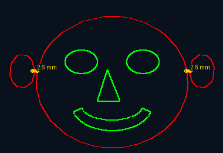

Schnellstart mit Beispiel: Handballspieler
Diese Bilder stammen aus einer Vorführung mit V3.1.0. Die Werte zeigen dieses Beispiel und sind keine allgemeinen Schneidvorgaben. Lizenzdaten und persönliche Dateipfade sind ausgeschnitten. Die Menünamen beziehen sich auf die deutsche Oberfläche.
1. Bild laden
Öffne „Bild & Projekt“ und lade dein Motiv über „Bild laden“. Links erscheint das Original. Rechts ist zunächst noch keine Kontur vorhanden. Kehre mit „← Hauptmenü“ zurück.

2. Maske erstellen
Öffne „Maske & Größe“, lege Motivbreite und Ausgabe-Modus fest und erstelle die Maske. Im gezeigten Schnittmotiv entstehen rote Außen- und grüne Innenkonturen. Die Statusmeldung zeigte zunächst drei getrennte schwarze Komponenten. Die konkreten Maskenparameter wurden in der Vorführung nicht aufgezeichnet.

3. Stege gezielt setzen
Öffne „Stege“. Zoome auf getrennte Teile und setze bei Bedarf manuelle Verbindungen. In der Vorführung wurden der Ball und beide Ärmel bearbeitet. Gelbe Markierungen zeigen die Stege; am Ball wurden 2,0 mm angezeigt. Während des manuellen Zeichnens beachte die Statusanweisung; ein Doppelklick auf das Ziel beendet die Verbindung.

4. Verbindungen prüfen
Prüfe das ganze Motiv und besonders schmale Verbindungen. Nach der Bearbeitung meldete das Beispiel eine schwarze Komponente und 13 Brücken. Diese Anzahl ist ein Beispielergebnis; kontrolliere die Geometrie zusätzlich visuell. Rückgängig und Wiederholen erlauben Korrekturen.

5. Glätten und Ergebnis vergleichen
Öffne „Pfad glätten / vereinfachen“. Hier war „Stärker glätten – ähnlich Inkscape“ aktiv, die maximale Abweichung stand auf 1,0 mm und die Stärke auf 15 / 50. Daraus ergibt sich eine wirksame Grenze von 0,300 mm. Klicke „Pfad glätten / aktualisieren“ und warte auf das Ende der Berechnung. Danach zeigte das hervorgehobene Feld ≈ 0,299 mm. Die Vorschau meldete 15.190 → 3.450 Pfadknoten (−77,3 %), 2.070 Kurven und 23/23 geglättete Konturen; im zweiten Durchlauf wurden weitere 4.273 Knoten entfernt. „Originalkontur“ blendet den cyan gestrichelten Vergleich ein. Der Messwert gilt für die Vorschau; andere Motive und Exportauflösungen können andere Werte ergeben.

6. DXF speichern
Öffne „Prüfen & Exportieren“. Im Beispiel war „Hoch (bis 3000 px)“ gewählt und „Originalkontur in DXF mitspeichern“ eingeschaltet. Wähle „DXF speichern“, gib einen Dateinamen an und warte auf die Exportprüfung. Erst die Statusmeldung „DXF gespeichert“ bestätigt den Abschluss. Die Referenz liegt in Cyan auf REFERENZ_ORIGINAL. Schalte diesen Layer in deiner Lasersoftware ausdrücklich vom Schneiden aus: Eine Farbe allein garantiert nicht, dass er ignoriert wird.

Schnell starten
2. Die Programmoberfläche
Hier findest du den Befehl: Bild & Projekt
Zeigt das Ausgangsmotiv. Dieses Bild bleibt als Grundlage für hochauflösende Exporte erhalten.
Zeigt Schnittreihenfolge, ignorierte Konturen und Brücken. Hier werden manuelle Brücken direkt bearbeitet. Mit dem Mausrad kann in die Vorschau gezoomt werden; die Mausposition bleibt dabei das Zoomzentrum. Mit F wird die komplette Kontur wieder ins Fenster eingepasst.
Enthält Modus, Maskenparameter, Brückeneinstellungen, Glättung, Größe und Export.
Meldet Komponenten, Brücken, Warnungen und den Fortschritt laufender Berechnungen.
Prompt für Schnittmotiv und Prompt für Gravurmotiv erstellen
Beide Schaltflächen öffnen einen lokalen KonturFix-Promptgenerator. Der Schnittgenerator ergänzt Regeln für klare Schwarz-Weiß-Flächen und zusammenhängende Stencils. Der Gravurgenerator ergänzt materialgerechte Graustufen, kontrollierte Detailgrößen und eine eindeutig geschlossene Außenform für den Zuschnitt. Prompt kopieren legt das Ergebnis in die Zwischenablage; ChatGPT öffnen kopiert es ebenfalls und öffnet anschließend den passenden spezialisierten Assistenten. Das erzeugte Bild wird gespeichert und danach über Bild laden in KonturFix geöffnet.
Ergänzt die Motividee automatisch um klare Schwarz-Weiß-Flächen, passende Mindeststrukturen, wenige Inseln, eine brückenfreundliche Geometrie und materialspezifische Regeln. Abmessungen und Seitenverhältnis werden in den Prompt übernommen.
Empfehlung: Das Motiv konkret beschreiben und Material, Stärke sowie Detailgrad realistisch einstellen. Der Generator optimiert die Bildvorlage, ersetzt aber nicht die spätere Kontur- und Brückenprüfung.
Erzeugt eine flache, ladbare Gravurvorlage statt eines Material-Mockups. Material, Stärke, Abmessungen, Gravurstil, Detailgrad und Form des Zuschnitts bestimmen Tonwerttrennung, Mindestdetails und Außenkontur.
Empfehlung: Für Fotos realistische Graustufen, für klare Illustrationen Linien/Schraffur oder kontrastreiche Graustufen wählen. Das Ergebnis in KonturFix mit Gravur + Außenkontur verarbeiten.
Je nach Ergebnis den Promptgenerator für Schnittmotiv oder Gravurmotiv öffnen.
Motiv, Material, Maße und die passenden Stiloptionen eingeben, den Prompt kopieren, in ChatGPT verwenden und das Resultat als PNG oder JPG speichern.
Bild laden wählen, die gespeicherte Datei öffnen und mit Maske, Konturen und Brücken fortfahren.
3. Ausgabemodi
Hier findest du den Befehl: Maske & Größe
Schnittmotiv
Schwarze Flächen werden zu geschlossenen Vektorkonturen. Dieser Modus eignet sich für Schablonen, Wandbilder, Dekore und Stencil-Motive.
Gravur + Außenkontur
Das Bild bleibt als Rastergravur eingebettet. Nur der größte zusammengehörige Außenbereich wird als rote Schnittkontur ausgegeben. Dadurch lässt sich das gravierte Motiv anschließend sauber ausschneiden.
4. Die Maske optimieren
Hier findest du den Befehl: Maske & Größe
| Einstellung | Wirkung | Praxisempfehlung |
|---|---|---|
| Schwarz-Schwelle | Bestimmt, welche Helligkeiten als schwarze Schnittfläche gelten. | Erhöhen, wenn Teile fehlen; reduzieren, wenn zu viele Schatten verbunden werden. |
| Bild invertieren | Tauscht Schwarz und Weiß. | Verwenden, wenn Hintergrund und Motiv vertauscht erkannt werden. |
| Glätten vor Maske | Beruhigt kleine Pixelstörungen vor der Schwarz-Weiß-Erkennung. | Niedrig beginnen. Zu hohe Werte können Augen, Haare oder Schrift schließen. |
| Kleine Teile entfernen | Entfernt isolierte Flächen unterhalb einer Pixelanzahl. | So weit erhöhen, bis Staub verschwindet, aber wichtige Details erhalten bleiben. |
Motivbreite und Hauptfläche gehören zu „Maske & Größe“. Die Motivbreite in mm bestimmt die Ausgabegröße und den Maßstab für Stege und Toleranzen. Die Hauptfläche wählt die größte Fläche oder den Bereich nahe der Bildmitte als Bezug für Verbindungen. Maße vor dem Setzen der Stege festlegen.
5. Konturen, Ebenen und Farben
Hier findest du den Befehl: Maske & Größe

Farben zeigen die vorgesehene Zuordnung: Grün innen, Rot außen. Reihenfolge und Zuordnung nach dem Import im Laserprogramm prüfen.
Farben zeigen die vorgesehene Zuordnung: Grün innen, Rot außen. Reihenfolge und Zuordnung nach dem Import im Laserprogramm prüfen.
Erkannte Kontur, die im gewählten Schnittmodus nicht exportiert wird.
Zeigt Position und berechnete Breite einer Verbindung.
Schnittkonturen
- Nur Außenkontur: nur die äußerste rote Form.
- Außenkontur und Innenlöcher: üblicher Modus für Stencils; Grün vor Rot.
- Alle erkannten Schnittkonturen: nimmt auch tiefer verschachtelte Ebenen auf.
6. Automatische und manuelle Brücken
Hier findest du den Befehl: Stege
Brücken verbinden Inseln mit der Hauptfläche. Ohne Brücke würden beispielsweise Pupillen, Nasenteile oder Buchstabeninnenflächen nach dem Schneiden herausfallen.

Automatisch: „Inseln verbinden“
- sucht kurze Verbindungen zur Hauptfläche,
- prüft Kollisionen mit fremden Details,
- setzt bei großen Inseln nach Möglichkeit zwei getrennte Brücken,
- beachtet die maximale Brückenlänge und meldet unsichere Fälle.
| Einstellung | Bedeutung |
|---|---|
| Brückenbreite | Feste Breite, wenn die automatische Breitenwahl deaktiviert ist. |
| Breite automatisch | Passt jede Brücke an Inselgröße und Spannweite an. |
| Minimum / Maximum | Sicherheitsgrenzen für automatisch berechnete Breiten. |
| Maximale Brückenlänge | Verhindert ungewollt lange Stege; 0 hebt das Längenlimit auf. |
| Hauptfläche | Wahl zwischen größter Fläche und dem Bereich nahe der Bildmitte. |
Manuell setzen und freie Brücken
- Brücke manuell setzen wählen.
- Den ersten Anschlusspunkt auf einer schwarzen Kontur anklicken. Dieser Punkt rastet an der nächstgelegenen Kontur ein.
- Beliebig viele Zwischenpunkte frei in der Vorschau setzen, um die Brücke um wichtige Details wie Augen, Schrift oder feine Innenkonturen herumzuführen.
- Auf der Zielkontur doppelklicken, um die freie Brücke abzuschließen. Nur Start- und Endpunkt müssen auf schwarzem Material liegen.
- Die gelbe Live-Vorschau zeigt den Verlauf bereits während des Setzens mit der aktuell eingestellten Brückenbreite.
- Backspace entfernt den zuletzt gesetzten Punkt. Rechtsklick oder Escape bricht den Vorgang ab.
Die manuelle Breite entspricht Brückenbreite (mm). Nach dem Abschließen wird die Brücke mit der Maske verschmolzen und kann später über Brücke löschen gezielt entfernt werden.
Einzeln löschen
Brücke löschen wählen und nahe an die gewünschte gelbe Verbindung klicken. Nur die nächstgelegene Brücke wird entfernt; die Maske wird aus dem sauberen Grundzustand neu aufgebaut.
Die automatische Breitenwahl gilt für „Inseln verbinden“; Minimum und Maximum begrenzen die berechnete Breite. Manuelle Stege verwenden „Brückenbreite (mm)“. Maximale Brückenlänge 0 bedeutet ohne Längenlimit. „Manuell beenden“ beendet den Zeichenmodus. Zum Löschen „Brücke löschen“ wählen und auf die gewünschte gelbe Verbindung klicken. Nach Änderungen an Stegen die Glättung erneut kontrollieren.
7. Pfadvereinfachung, Glättung und Detailtreue
Hier findest du den Befehl: Pfad glätten / vereinfachen
Die alte SVG-Glättung ist entfernt. Ohne aktivierte Pfadvereinfachung bleibt die Maskenkontur erhalten; nur exakt gerade Zwischenpunkte können entfallen. „Glätten vor Maske“ ist eine separate Bild-/Maskenbearbeitung und keine Béziervereinfachung.
Nach der Maskenerstellung das eigene Menü „Pfad glätten / vereinfachen“ öffnen. Maximale Abweichung und Stärke einstellen, dann „Pfad glätten / aktualisieren“ drücken. Die berechnete Vorschau und Knotenstatistik zeigen das Ergebnis. Große Motive können länger rechnen.
Geschützt: maximale eingestellte Abweichung 0,1 mm. Stärker glätten – ähnlich Inkscape: bis 2 mm und möglicherweise stärkere Formänderung. Wirksame Toleranz = eingestellte Abweichung × Stärke / 50. Beispiel: 1 mm × 15 / 50 = 0,3 mm. Stärke 0 erhält die Originalkontur.
Im stärkeren Modus folgt automatisch ein gezielter zweiter Durchlauf. Beide werden gegen die Originalkontur mit derselben Gesamttoleranz geprüft; die Abweichungen addieren sich nicht. Beidseitige Distanz- und Topologieprüfungen schützen die Geometrie. Kritische Details und enge Stege können unverändert oder treppenförmig bleiben. Es wird keine identische Inkscape-Kontur garantiert.
Im Schnittmodus werden die gewählten Schnittpfade bearbeitet. Bei Gravur ist die Funktion ausschließlich für „Gravur + Außenkontur“ UND „Nur Außenkontur“ verfügbar und betrifft dann nur die äußere Schnittkontur. Rastergravur und Graustufen bleiben unverändert.
„Originalkontur“ zeigt die Referenz cyan gestrichelt. „Vereinfachung zurücksetzen“ stellt die Originalkontur wieder her und aktiviert keine alte Glättung. Rückgängig/Wiederholen verwalten die Bearbeitungsschritte. Nach Änderungen an Maske, Größe oder Exportqualität das Ergebnis erneut prüfen.
DXF-Referenz und gemessene Abweichung
Hier findest du den Befehl: Prüfen & Exportieren
Im Menü Prüfen & Exportieren kann „Originalkontur in DXF mitspeichern“ eingeschaltet werden (Standard: aus). Die gewählten Original-Schnittkonturen werden zusätzlich cyan auf REFERENZ_ORIGINAL gespeichert und als nicht druckend markiert. Diese Ebene im Laserprogramm ausdrücklich von der Ausgabe ausschließen; keine Farbe oder DXF-Kennzeichnung garantiert, dass ein Laser sie ignoriert.
Nach dem Glätten zeigt das hervorgehobene Feld „Max. Konturabweichung · Vorschau“ den größten beidseitigen kürzesten Abstand zum Original in mm. Es handelt sich um eine numerische Näherung mit weniger als 0,001 mm Fehler, nicht um einen eindeutigen Normalabstand an Ecken. Andere Exportauflösungen können andere Konturen und Messwerte ergeben.
8. Rückgängig, Wiederholen und Originalzustand
Bis zu 20 Bearbeitungszustände werden gehalten. Dazu gehören Masken, Brücken, Reparaturen, Modi und relevante Parameter.
- Rückgängig: zum vorherigen Zustand.
- Wiederholen: einen rückgängig gemachten Schritt erneut anwenden.
- Originalzustand: zum ersten Zustand des geladenen Bildes oder Projekts zurückkehren.
9. Projekte speichern und öffnen
Hier findest du den Befehl: Bild & Projekt
Eine .lkfproj-Datei speichert:
- Original- und Arbeitsbild,
- Grundmaske und optimierte Maske,
- automatische und manuelle Brücken,
- Kontur-, Glättungs-, Größen- und Exporteinstellungen.
Nach dem Öffnen kann die Arbeit exakt fortgesetzt werden. Beschädigte, unvollständige oder inkompatible Projektdateien werden abgelehnt.
10. Exportformate und Qualität
Hier findest du den Befehl: Prüfen & Exportieren
| Format | Verwendung |
|---|---|
| PNG | Optimierte Schwarz-Weiß-Maske zur Kontrolle oder Weiterverarbeitung. |
| SVG | Vektordatei mit farbiger Schnittreihenfolge. Innen grün zuerst, außen rot zuletzt. Im Gravurmodus zusätzlich eingebettetes Rasterbild. |
| DXF | DXF enthält Schnittkonturen in Millimetern: geschlossene Polylinien beziehungsweise SPLINE-Elemente für vereinfachte Bézierpfade. Rastergravur wird nicht als DXF-Bild ausgegeben. Die Unterstützung von SPLINE im Zielprogramm prüfen. |
Exportqualität
- Schnell: verwendet die Vorschauauflösung.
- Hoch: berechnet bis zu 3000 Pixel neu; guter Standard für die meisten Arbeiten.
- Original: nutzt die volle Originalauflösung. Für sehr große Bilder erscheint eine Speicherwarnung.
Die Motivbreite bestimmt die reale Ausgabegröße. Filter, Brücken und Glättung werden maßstabsgerecht auf die Exportauflösung übertragen.
11. Exportprüfung und Reparatur
Hier findest du den Befehl: Prüfen & Exportieren
Vor SVG und DXF kontrolliert KonturFix die Geometrie. Gelbe Hinweise dürfen nach Prüfung bestätigt werden; rote Fehler blockieren einen wahrscheinlich fehlerhaften Export.
| Meldung | Typische Lösung |
|---|---|
| Keine Kontur / keine Außenkontur | Maske, Schwellenwert, Invertierung und Konturmodus prüfen. |
| Unverbundene Bereiche | Automatische oder manuelle Brücken setzen. |
| Unsichere oder zu schmale Brücken | Längenlimit beziehungsweise Mindestbreite anpassen und neu verbinden. |
| Sehr kleine Geometrie | Kleinteilfilter erhöhen oder Motiv größer ausgeben. |
| Selbstüberschneidungen | Glättung reduzieren. |
| Sehr komplexe Kontur | Glättung vorsichtig erhöhen oder Störungen stärker entfernen. |
Der Reparaturdialog erklärt Ursache und Empfehlung und kann die passende Korrektur direkt anstoßen.
NC Datei erzeugen
„NC Datei erzeugen“ ist ein eigener Menüpunkt ohne Befehle. V3.1.0 erzeugt keine NC-Dateien und steuert keine Maschine.
Hilfe & Einstellungen
Hier öffnest du die Hilfe und wählst Deutsch, Englisch, Französisch, Spanisch oder Italienisch. „Lizenz / Aktivierung“ öffnet die Eingabe des Lizenzcodes. „Programminformation“ zeigt Version und Autor; „Projekt unterstützen“ öffnet den Unterstützungsdialog. Im Lizenzbereich oben rechts befinden sich Installations-ID, Lizenzanforderung und Aktivierung. Neue Menüs und einige Funktionen sind außerhalb der deutschen Oberfläche derzeit noch englisch beschriftet. Die Hilfe folgt der gewählten Sprache.
12. Testphase und Offline-Lizenz
Hier findest du den Befehl: Hilfe & Einstellungen
Die Software kann 30 Tage getestet werden. Danach bleibt der Lizenzbereich erreichbar, damit weiterhin eine Lizenz angefordert und aktiviert werden kann.
- Name/Firma und E-Mail-Adresse eintragen.
- Lizenzanforderung erstellen; die Installations-ID wird mit übernommen.
- Den erhaltenen Lizenzcode über Lizenz aktivieren eintragen.
Die Aktivierung funktioniert vollständig offline. Die App enthält nur einen öffentlichen Ed25519-Prüfschlüssel. Der private Signaturschlüssel befindet sich ausschließlich beim Lizenzgeber; die App kann Lizenzen prüfen, aber keine erzeugen.
13. Empfohlener Ablauf für Gesichter
- Ein kontrastreiches Bild verwenden; starke Schatten und unruhige Hintergründe möglichst vorher reduzieren.
- Schwarz-Schwelle so einstellen, dass Augen, Nase und Mund klar getrennt, aber nicht unnötig massiv werden.
- Kleinteilfilter nur vorsichtig erhöhen, damit feine Gesichtszüge erhalten bleiben.
- Inseln automatisch verbinden lassen.
- Jede Brücke in der Vorschau prüfen. Ungünstige Stege einzeln löschen und an einer unauffälligen, stabilen Stelle manuell setzen.
- Besonders Augen, Nasenflügel, Lippen, Haarsträhnen und sehr schmale Zwischenräume kontrollieren.
- Bei Bedarf die geschützte Pfadvereinfachung mit kleiner wirksamer Toleranz anwenden und Details mit der Originalkontur vergleichen.
- Projekt speichern, danach Exportprüfung ausführen.
14. Problemlösung
Das Motiv ist vollständig schwarz oder leer
„Bild invertieren“ wechseln und Schwarz-Schwelle in die Gegenrichtung bewegen.
Wichtige Details fehlen
Kleinteilfilter und Glättung reduzieren; Schwellenwert kontrollieren.
Zu viele Punkte oder gezackte Kanten
Bei gezackten Konturen das Menü „Pfad glätten / vereinfachen“ verwenden, berechnen lassen und mit dem Original vergleichen. Kritische Ecken und schmale Stege können trotz Glättung erhalten bleiben. Wenn die Funktion bei Gravur gesperrt ist, müssen „Gravur + Außenkontur“ und „Nur Außenkontur“ gleichzeitig gewählt sein. „—“ im Abweichungsfeld bedeutet, dass noch kein gültiger Vorschauwert vorliegt; „…“ kennzeichnet die laufende Berechnung. Der Schalter für den cyanfarbenen Vorschauvergleich und der Schalter zum Mitspeichern der DXF-Referenz wirken unabhängig voneinander.
Eine Insel bleibt unverbunden
Maximale Brückenlänge erhöhen beziehungsweise auf 0 setzen oder die Verbindung manuell platzieren.
Eine Brücke liegt optisch ungünstig
„Brücke löschen“ verwenden und anschließend manuell an einer besseren Stelle setzen.
Der Originalexport benötigt sehr lange
Exportqualität „Hoch“ verwenden. Sie begrenzt die lange Bildkante auf 3000 Pixel und ist meist ausreichend.
Ein Projekt lässt sich nicht öffnen
Nur unveränderte .lkfproj-Dateien dieser Programmversion verwenden. Ein Projekt ist kein gewöhnliches Bild und sollte nicht manuell umbenannt oder bearbeitet werden.
15. Tastatur und Abschlusskontrolle
| Tasten | Aktion |
|---|---|
| Strg + Z | Rückgängig |
| Strg + Y | Wiederholen |
| Strg + Umschalt + Z | Wiederholen |
Vor dem Lasern prüfen
- Reale Motivbreite und Materialgröße stimmen.
- Grüne Innenkonturen werden vor roten Außenkonturen geschnitten.
- Alle notwendigen Inseln besitzen ausreichend breite Brücken.
- Keine Brücke verdeckt ein wichtiges Gesichts- oder Schriftmerkmal.
- Die Exportprüfung enthält keine roten Fehler.
- Leistung, Geschwindigkeit, Fokus und Materialeignung wurden in der Lasersoftware geprüft.
Mausrad über der Vorschau: Zoom um den Cursor. F über der Vorschau: gesamte Kontur einpassen. Beim manuellen Steg: Backspace entfernt den letzten Punkt; Escape oder Rechtsklick bricht ab; Doppelklick auf das Ziel schließt den Steg ab.